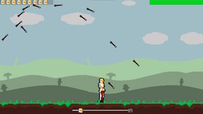

ESCAPE THE INVADERS
Escape the invaders is a game where you play as a medieval knight that has to escape an attacking army and reach the castle in time.
Starting off as a game jam project, where my team was taking part in a competition to create a game to the "leave something behind" theme in a week, we wanted to keep the concept simple but fun.
Which is why we decided to have 3 core features central to the gameplay.
- Upgradable character: Players can upgrade their knight's health and stamina to better withstand attacks and travel faster.
- Arrow attacks: Enemy archers fire arrows that can damage the player, adding a level of challenge and urgency to the game.
- Stamina management: The player must carefully manage their knight's stamina, which can be used to dodge arrows but also affects their movement speed.
These 3 features ensure the player has options for how they want to play. Do they want to play as a fast nimble knight? Or do they want to play as a tank that will take every hit?

To keep the gameplay simple for the player, it was decided that as they are in-game, they passively gain the coins they use to upgrade.
This means that the further the player gets along in the level, they gain more coins that they can then spend on upgrades.
If the player decides to upgrade their health with their coins, they will be able to take more hits from arrows before dying.
Alternatively, if the player decides to upgrade their stamina instead,
they will be able to dodge arrows more easily as they will be able to move more nimbly for longer.
Having made it so that the player gains coins passively,
this means that whether they are new to the game or have played it a lot, they can feel like they are progressing and having fun.
The more they fail, the more they can upgrade their character,
which will give them an even higher chance of winning next time and give them a sense of accomplishment when they do finally reach the end of the level.